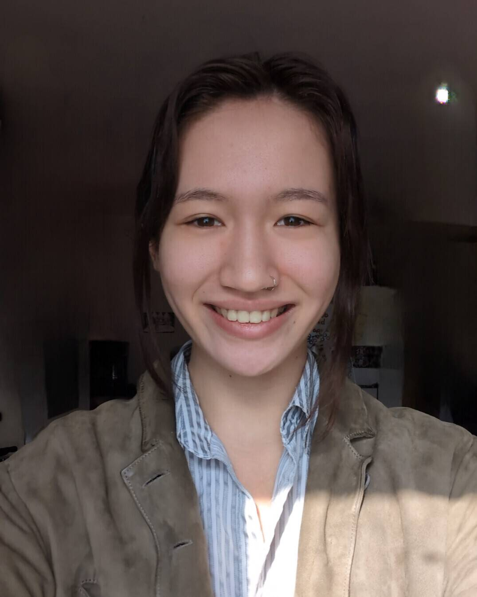

I am a Computer Engineering student at Iowa State University. I will be graduating the spring of 2027. My focus has been on physical and digital design, including architecture of computer systems, websites, applications, and operating systems. I am particularily interested in digital design, including creating websites, applications, and games.
One of the aspects of computer engineering I most enjoy is problem solving, particularily debugging or troubleshooting technical issues. I also enjoy devloping ideas from start to finish, combining my creativity and technical skills to complete projects I am passionate about.
In addition to my technical work, I have a strong understanding of composition and visual design. I have advanced drawing and painting skills with much of my work focusing on hyperrealistic rendering.
I am open to variety of fields in Computer Engineering. Particularily I interested in work involving software, such as web development, applications, operating systems, and computer graphics. I would like to able to use my creative and techinical skills to develop engaging and effective designs. I am interested in work that creates a tangible product people can enjoy, or is useful to them.
After graduation I plan on pursuing job opportunities that focus on software or hardware architecture, as well as digital design. I also have always been interested in joining a service-oriented organizations where I can support communities and create a meaningful impact with what I have learned.
